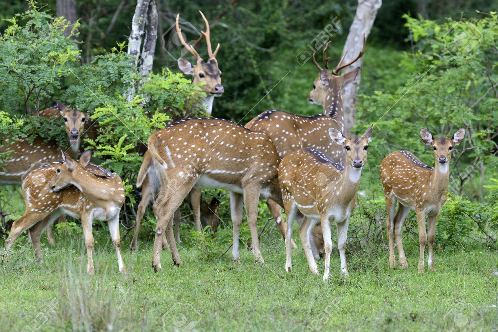
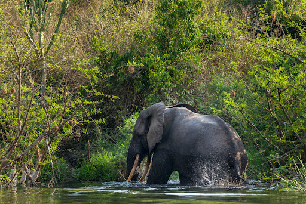
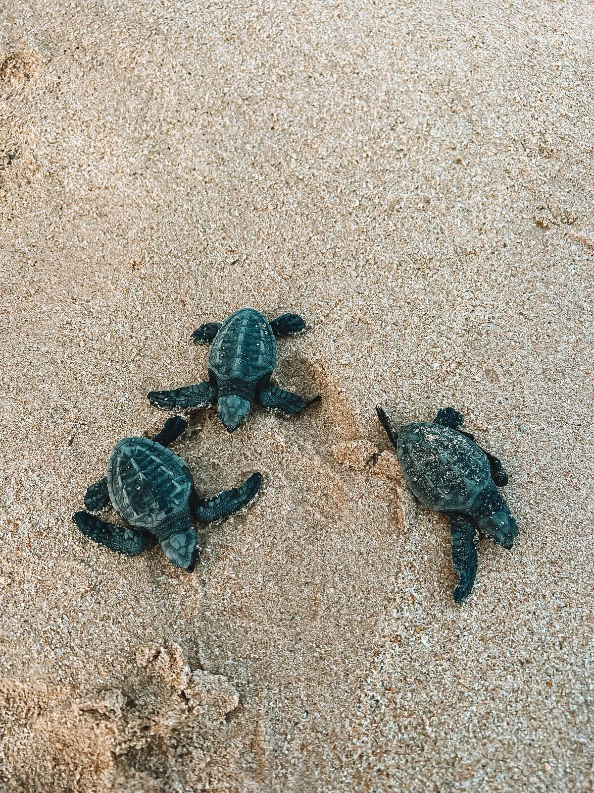
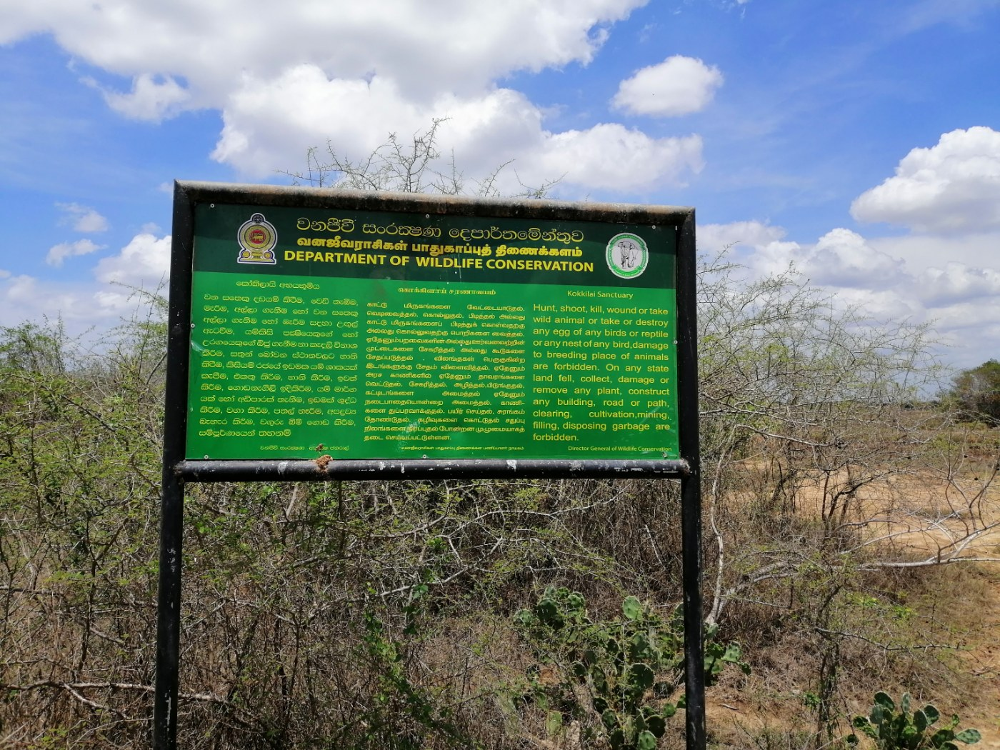
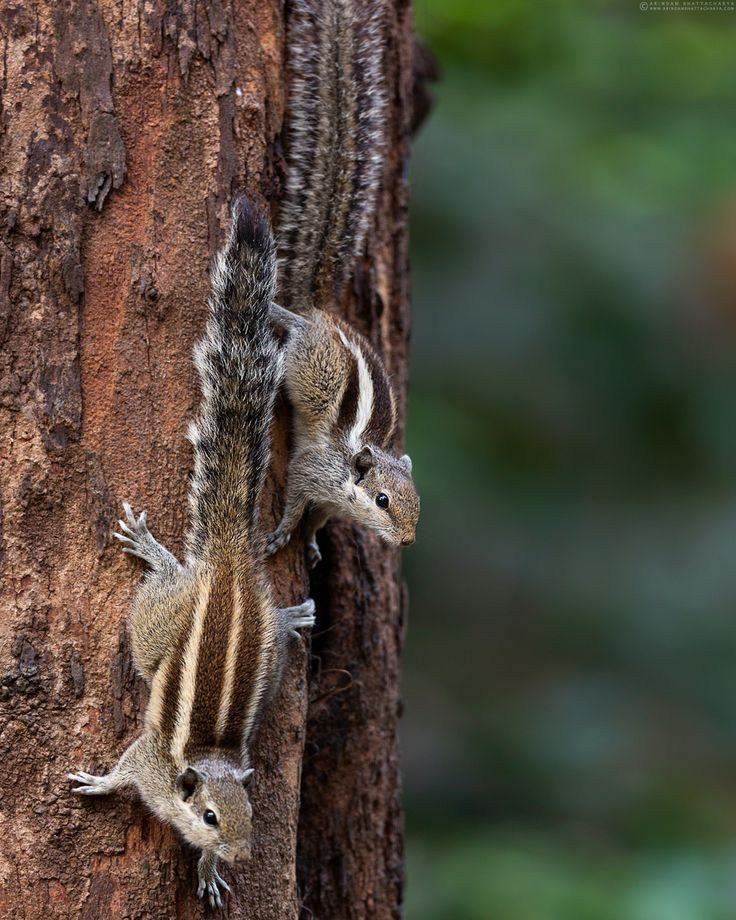
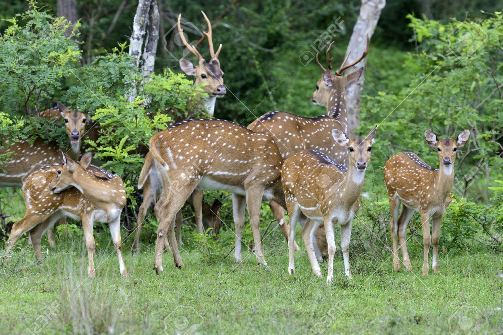
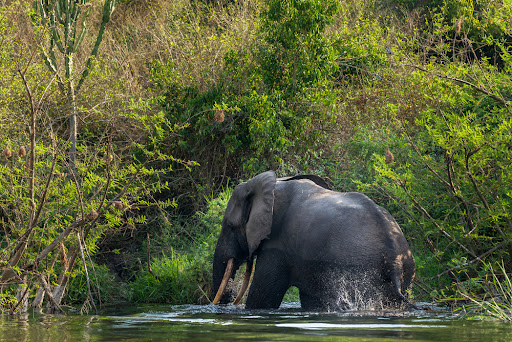
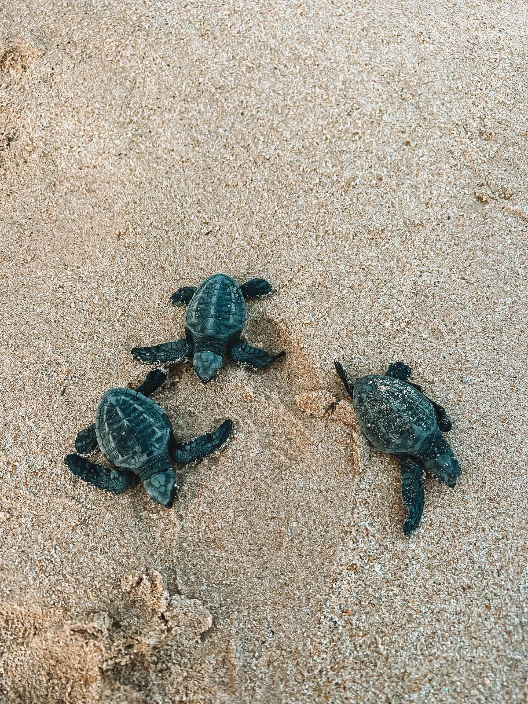
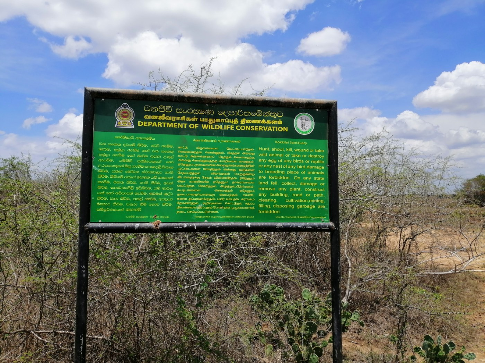
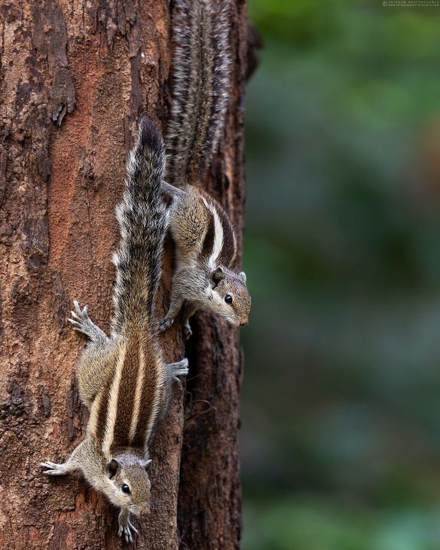

Sri Lanka's Department of Wildlife Conservation is in charge of protecting the island's wide variety of plants and animals and making
sure that human activity and wildlife coexist together. Conserving biodiversity, overseeing national parks and wildlife reserves,
studying and monitoring wildlife, incorporating local communities in conservation activities, stopping poaching and the illegal wildlife
trade, raising public awareness of environmental issues, and carrying out habitat restoration projects are some of the main duties.
The department's goals are to dismantle networks involved in the illicit wildlife trade, preserve and conserve endangered species,
and maintain ecological equilibrium. In order to raise awareness of environmental issues and safeguard endangered species, it also
runs educational initiatives and awareness campaigns. In order to promote the general health of the ecosystem, the department also
works on habitat restoration projects, such as reforestation and habitat enhancement projects. The Wildlife Conservation
Department(Department of wild life LK, 2022)
 









Sri Lanka is home to a diverse array of ecosystems and wildlife, with several protected areas established to conserve and sustain this
rich biodiversity. Yala National Park, the second-largest national park in the country, is known for its dense jungles, scrublands, and
coastal areas, offering habitat protection for various species. Wilpattu National Park, the largest national park in Sri Lanka, is known
for its natural lakes, dense forests, and open grasslands, providing a sanctuary for numerous species and contributing to the preservation
of Sri Lanka's natural heritage.